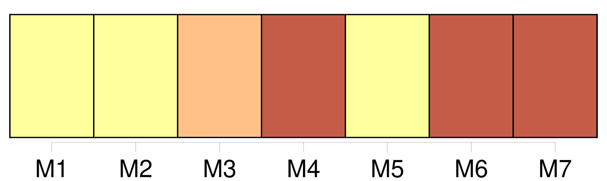
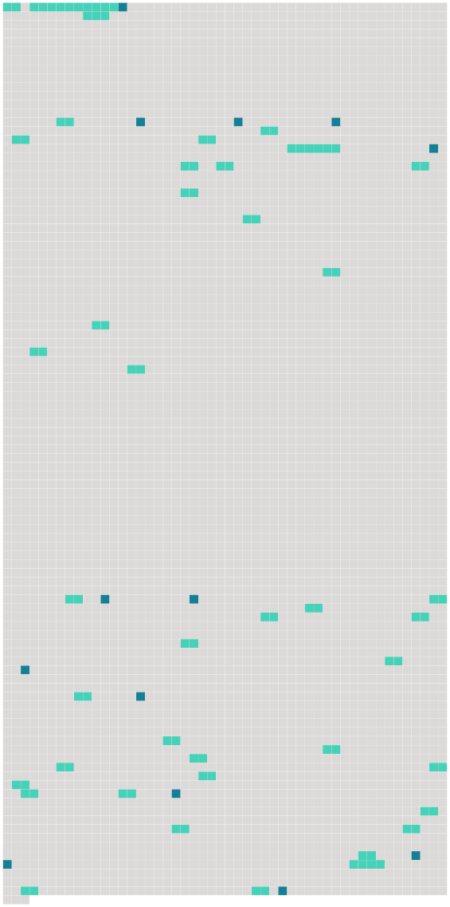

Longueur nb maillons : 54 mentions |
  |
[Le mineur] est [l'individu de l'un ou de l'autre sexe] [qui] n'a point encore l'âge de vingt-un ans accomplis. [5 phrases]
Le père est, durant le mariage, administrateur des biens personnels de [ses enfans mineurs] [32 phrases]
Lorsqu'il n'a pas été choisi [au mineur] un tuteur par le dernier mourant de [ses] père et mère, la tutelle appartient de droit à [son] aïeul paternel ; à défaut de celui -ci, à [son] aïeul maternel, et ainsi en remontant, de manière que l'ascendant paternel soit toujours préféré à l'ascendant maternel du même degré. [1 phrases]
Si, à défaut de l'aïeul paternel et de l'aïeul maternel [du mineur] , la concurrence se trouvait établie entre deux ascendans du degré supérieur qui appartinssent tous deux à la ligne paternelle [du mineur] , la tutelle passera de droit à celui des deux qui se trouvera être l'aïeul paternel du père [du mineur] [5 phrases]
Lorsqu' [un enfant mineur et non émancipé] restera sans père ni mère, ni tuteur élu par [ses] père ou mère, ni ascendans mâles, comme aussi lorsque le tuteur de l'une des qualités ci-dessus exprimées se trouvera ou dans le cas des exclusions dont il sera parlé ci-après, ou valablement excusé, il sera pourvu, par un conseil de famille à la nomination d'un tuteur. [1 phrases] Ce conseil sera convoqué soit sur la réquisition et à la diligence des parens [du mineur] , de [ses créanciers] ou d'autres parties intéressées, soit même d'office et à la poursuite du juge de paix du domicile [du mineur] [5 phrases]
Les frères germains [du mineur] et les maris des sœurs germaines sont seuls exceptés de la limitation de nombre posée en l'article précédent. [3 phrases]
Lorsque les parens ou alliés de l'une ou de l'autre ligne se trouveront en nombre insuffisant sur les lieux, ou dans la distance désignée par l'article 407, le juge de paix appellera, soit des parens ou alliés domiciliés à de plus grandes distances, soit, dans la commune même, des citoyens connus pour avoir eu des relations habituelles d'amitié avec le père ou la mère [du mineur] [11 phrases]
S'il y a excuse suffisante, et qu'il convienne, soit d'attendre le membre absent, soit de le remplacer ; en ce cas ; comme en tout autre où l'intérêt [du mineur] semblera l'exiger, le juge de paix pourra ajourner l'assemblée ou la proroger. [17 phrases]
Ses fonctions consisteront à agir pour les intérêts [du mineur] , lorsqu'ils seront en opposition avec ceux du tuteur. [2 phrases]
S'il s'est ingéré dans la gestion avant d'avoir rempli cette formalité, le conseil de famille, convoqué soit sur la réquisition des parens, créanciers ou autres parties intéressées, soit d'office par le juge de paix, pourra, s'il y a eu dol de la part du tuteur, lui retirer la tutelle, sans préjudice des indemnités dues [au mineur] [5 phrases]
Le subrogé tuteur ne remplacera pas de plein droit le tuteur, lorsque la tutelle deviendra vacante, ou qu'elle sera abandonnée par absence ; mais il devra, en ce cas, sous peine des dommages-intérêts qui pourraient en résulter pour [le mineur] , provoquer la nomination d'un nouveau tuteur. [76 phrases]
Le tuteur prendra soin de la personne [du mineur] , et [le] représentera dans tous les actes civils. Il administrera [ses] biens en bon père de famille, et répondra des dommages-intérêts qui pourraient résulter d'une mauvaise gestion.
Il ne peut ni acheter les biens [du mineur] , ni les prendre à ferme à moins que le conseil de famille n'ait autorisé le subrogé tuteur à lui en passer bail ni accepter la cession d'aucun droit ou créance contre [son pupille] [1 phrases]
Dans les dix jours qui suivront celui de sa nomination, dûment connue de lui, le tuteur requerra la levée des scellés, s'ils ont été apposés, et fera procéder immédiatement à l'inventaire des biens [du mineur] , en présence du subrogé tuteur.
S'il lui est dû quelque chose par [le mineur] , il devra le déclarer dans l'inventaire, à peine de déchéance, et ce sur la réquisition que l'officier public sera tenu de lui en faire, et dont mention sera faite au procès-verbal. [3 phrases]
Les père et mère, tant qu'ils ont la jouissance propre et légale des biens [du mineur] , sont dispensés de vendre les meubles, s'ils préfèrent de les garder pour les remettre en nature. [3 phrases]
Lors de l'entrée en exercice de toute tutelle, autre que celle des père et mère le conseil de famille réglera par aperçu, et selon l'importance des biens régis, la somme à laquelle pourra s'élever la dépense annuelle [du mineur] , ainsi que celle d'administration de [ses] biens. [6 phrases] Le tuteur, même le père ou la mère, ne peut emprunter pour [le mineur] , ni aliéner ou hypothéquer [ses] biens immeubles, sans y être autorisé par un conseil de famille. [9 phrases] Les formalités exigées par les articles 457 et 458 pour l'aliénation des biens [du mineur] , ne s'appliquent point au cas où un jugement aurait ordonné la licitation sur la provocation d'un copropriétaire par indivis. [2 phrases] Le tuteur ne pourra accepter ni répudier une succession échue [au mineur] , sans une autorisation préalable du conseil de famille. [2 phrases]
Dans le cas où la succession répudiée au nom [du mineur] n'aurait pas été acceptée par un autre, elle pourra être reprise soit par le tuteur, autorisé à cet effet par une nouvelle délibération du conseil de famille, soit par [le mineur] devenu majeur, mais dans l'état où elle se trouvera lors de la reprise, et sans pouvoir attaquer les ventes et autres actes qui auraient été légalement faits durant la vacance. [1 phrases]
La donation faite [au mineur] ne pourra être acceptée par le tuteur qu'avec l'autorisation du conseil de famille.
Elle aura, à l'égard [du mineur] , le même effet qu'à l'égard du majeur. [1 phrases]
Aucun tuteur ne pourra introduire en justice une action relative aux droits immobiliers [du mineur] , ni acquiescer à une demande relative aux mêmes droits, sans l'autorisation du conseil de famille. [1 phrases]
La même autorisation sera nécessaire au tuteur pour provoquer un partage mais il pourra, sans cette autorisation, répondre à une demande en partage dirigée contre [le mineur] [1 phrases]
Pour obtenir à l'égard [du mineur] tout l'effet qu' [il] aurait entre majeurs, le partage devra être fait en justice, et précédé d'une estimation faite par experts nommés par le tribunal civil du lieu de l'ouverture de la succession. [3 phrases]
Le tuteur ne pourra transiger au nom [du mineurs] qu'après y avoir été autorisé par le conseil de famille, et de l'avis de trois jurisconsultes désignés par le commissaire du Gouvernement près le tribunal civil. [2 phrases]
Le tuteur qui aura des sujets de mécontentement graves sur la conduite [du mineur] , pourra porter ses plaintes à un conseil de famille et, s'il y est autorisé par ce conseil, provoquer la réclusion [du mineur] , conformément à ce qui est statué à ce sujet au titre de la Puissance paternelle. [8 phrases] Le compte définitif de tutelle sera rendu aux dépens [du mineur] , lorsque aura atteint [sa] majorité ou obtenu [son] émancipation. [3 phrases]
Tout traité qui pourra intervenir entre le tuteur et [le mineur devenu majeur] , sera nul, s'il n'a été précédé de la reddition d'un compte détaillé, et de la remise des pièces justificatives ; le tout constaté par un récépissé de l'oyantcompte, dix jours au moins avant le traité. [4 phrases]
Les intérêts de ce qui sera dû au tuteur par [le mineur] , ne courront que du jour de la sommation de payer qui aura suivi la clôture du compte. [1 phrases] Toute action [du mineur] contre [son] tuteur, relativement aux faits de la tutelle, se prescrit par dix ans, à compter de la majorité. |
 |
La ressource peut être téléchargée sur la page Ortolang
Si vous avez des questions ou vous voyez des erreurs, merci d'envoyer un mail à silvia.federzoni89@gmail.com
Site développé par S. Federzoni (contact)